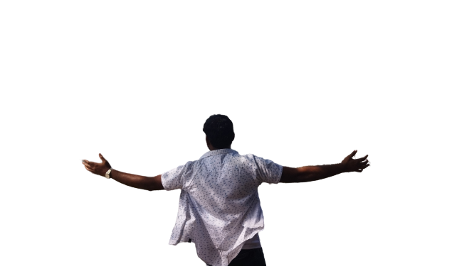
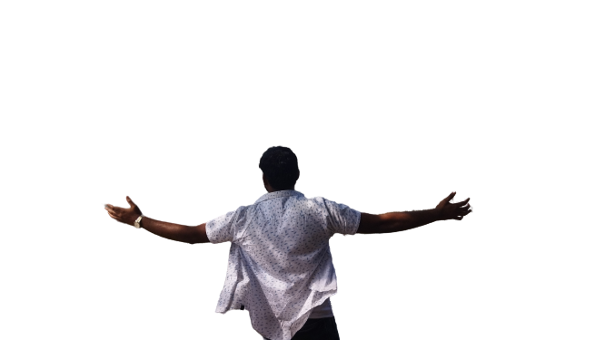

Wandering with Srijit
Adventures are some of the moments in life, which makes our heart pump faster and gives us the feeling of being alive and full. It is an exciting experience very different from our normal daily routine. The adventure also brings with it a certain amount of risk. It brings thrill with it, and we can feel the wind rushing. Some people love adventures and live for them. Others use it as a means of escape from their normal lives. Whatever be the reason, adventure makes people feel great about being able to live those moments
ANIME
Anime is hand-drawn and computer-generated animation originating from Japan. Outside Japan and in English, anime refers specifically to animation produced in Japan. However, in Japan and in Japanese, anime describes all animated works, regardless of style or origin
Girl Fighter
Anime is hand-drawn and computer-generated animation originating from Japan. Outside Japan and in English, anime refers specifically to animation produced in Japan. However, in Japan and in Japanese, anime describes all animated works, regardless of style or origin
ATTACK
Anime is hand-drawn and computer-generated animation originating from Japan. Outside Japan and in English,
anime refers specifically to animation produced in Japan. However,
in Japan and in Japanese, anime describes all animated works, regardless of style or origin
Anime is hand-drawn and computer-generated animation originating from Japan. Outside Japan and in English,
anime refers specifically to animation produced in Japan. However,
in Japan and in Japanese, anime describes all animated works, regardless of style or origin